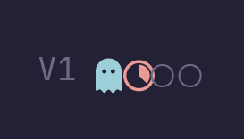
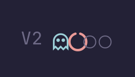
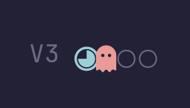
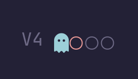
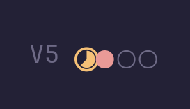
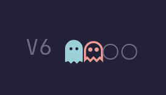

ᗧ + ○, plus your
pacman.sh helper. Problem: ᗧ (U+15E7) is in no font on your
system — that's why it was blank. Your JetBrainsMono Nerd Font has real ghost & pacman glyphs
instead, so below is your style rebuilt with glyphs that work.
All 6 mocks below are rendered from your actual font file — exactly what polybar draws.
Active = filled ghost, occupied = pacman slice, empty = ○ pellets. This is “ghost + pacman for active” as you remember it.

[module/workspaces] label-active = label-active-foreground = #9ccfd8 label-occupied = label-occupied-foreground = #ea9a97 label-empty = ○ label-empty-foreground = #6e6a86
Outline ghost + outline pac-notch. Quieter, stroke-only look.

[module/workspaces] label-active = label-occupied = label-empty = ○ ; same foregrounds as V1
Flip: pacman is active (big body, small mouth), ghost = occupied.

[module/workspaces] label-active = label-occupied = label-empty = ○
Exactly your pacman.sh pattern (active glyph + ○ ○ ○) but with a ghost that renders.

[module/workspaces] label-active = label-occupied = ○ label-empty = ○
Pacman in gold chomping through ● dots. Most literal “pacman” reading.

[module/workspaces] label-active = label-active-foreground = #f6c177 label-occupied = ● label-occupied-foreground = #ea9a97 label-empty = ○
Ghost duo: filled active, outline occupied. No pacman, all spirit.

[module/workspaces] label-active = label-occupied = label-empty = ○
~/.config/polybar/config.ini,
rewrite pacman.sh to the working glyph, relaunch, sync to
fleet/configs/polybar/. Bonus: your other nerd-font icons () were re-tested
and they render fine now too — the old blank problem was font-loading, not the glyphs.